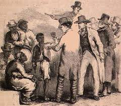
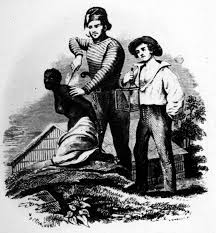

(i)women were treated like slaves .
Effia, Maame's other daughter, is married to a white man because of the money it will bring her family. Esi is captured by white and African men, put in a dungeon with other women waiting to be sold into slavery, raped, and sent to the United States against her will.


(ii)They believed their main role was to cook and bear children.
women were political tool,e.g Effia was supporse to marry the chief Abaku in order to have a strong political gain.
(iii)Women were assulted for no reason e.g baaba was beaten by Cobbe for no reason ,Maame also was raped
(iv) The big man beats Esi because her child refuse to speak the foreign language/English and also to maintain his name/image.
(v) victimization when ohehe promise to marry Abena during the next harvest but later when the harvest was not good , people started to blame Abena for the reason why the harvest was low
Women were use as tools or political gain e.gEffia's father cobbe want her to marry the chief in order for her to gain political popularity.Take care of the children e.g Babba is the one to take care of Effia and Fifi.
Women had low voice of speaking their mind and the decision to make e.g Effia was not allowed to choose who she should marry.
The women are still treated with violation e.g most women in africa undergoes abuse in marrages.
Women are now leaders from different community ,they serve as the main part of the community to solve problem.Assult like rape cases.g in D.R.C 1000 women are raped each day.Many non govermental organisation have programmes to surport women .Some tribes in many africa countries marries girls at a very young age .
Now the womens are free ,they are free to do whatever they really likes to do,they can now move freely. Womens are now leave their impressions in every field .They are doctors, they are engineers, they even run the country very bravely, they are even in the field of police. Womens are toppers in their own field and these all has been done because of some innovative thoughts of peoples. But also because of this if we say womens are treated equally then i fount that this is still not justify yet.
Women are now empowerment to each other,they ensure other women participate in the activities to improve there leaving stardards.
Women areinvvolved in the field of politics.They areleaders whose actio is seen and can be judge by the view of people.
(Women are power full ,they are leaders and nutures to the world)